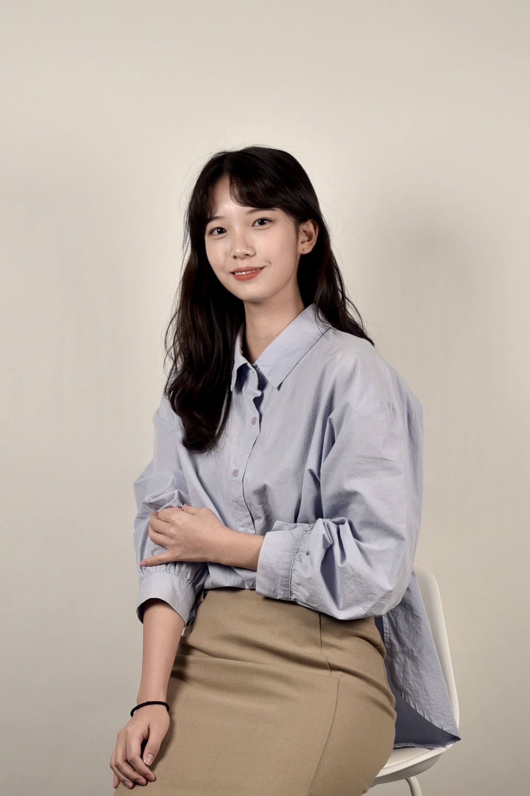

Hyejin Yoo
M.S. Student · Seoul National University
I am an M.S. student in Data Science at Seoul National University and a graduate researcher in the VLDB Lab, advised by Prof. Sang–won Lee. My research interests include database systems, concurrency control, OLTP systems, and storage systems. My current work focuses on improving concurrency under write–write conflicts in transaction processing systems.

Research
I am interested in transaction processing and concurrency control for scalable OLTP systems, especially in understanding and reducing synchronization bottlenecks under high contention.
RCC: Speculative Write Versioning with Redo Logs
RCC is a concurrency control scheme that repurposes redo logs as speculative write versions to pipeline update-conflicting transactions. I designed RCC and implemented it in MySQL 8.4 by extending its locking modules and transaction manager.
Publications
Research & Experience
Graduate Researcher · VLDB Lab
Working on concurrency control and transaction processing in OLTP systems. Designed RCC and implemented it in MySQL 8.4.
Undergraduate Research Intern · VLDB Lab
Studied transaction blocking under lock contention and quantified how write conflicts can dominate latency in OLTP workloads.
Team Leader & Backend Developer · Software Service Assistant
Led the development of KingoCoin, a campus reward system serving university students.
Co-founder & Backend Engineer · CodiMe Inc.
Co-founded and launched CodiMe, a generative AI-based virtual styling application, and delivered an investor-relations pitch to international investors in Grenoble, France.
Full Stack Developer Intern · Escare Inc.
Developed a secure banking authentication prototype.
Education
Seoul National University
Sungkyunkwan University
Academic Excellence Scholarship (Fall 2024) · Sungkyun Software Scholarship, full tuition (2020–2021)
Academic Service & Teaching
- Research Session Chair, DASFAA 2026
- Teaching Assistant, Introduction to Computing, Seoul National University, Spring 2026
- Teaching Assistant, Computer Programming for Engineers, Sungkyunkwan University, Fall 2023
Awards
- Grand Prize, AI Idea Contest, Sungkyunkwan University, 2023
- Grand Prize, Uni-DTHON, Consortium of Six Major Universities in South Korea, 2022
International Experience
AUA–Tsinghua SIGS Youth Leadership Program
Selected as one of two students from Seoul National University for a program hosted by Tsinghua University under the Asian Universities Alliance.
Global Challenge Program
Visited UC Berkeley’s Sky Computing Lab and offices of NVIDIA, Google, and Oracle; conducted in-person interviews with researchers and industry professionals.
Global Capstone Design Program
Collaborated with international peers and faculty at Johns Hopkins University.